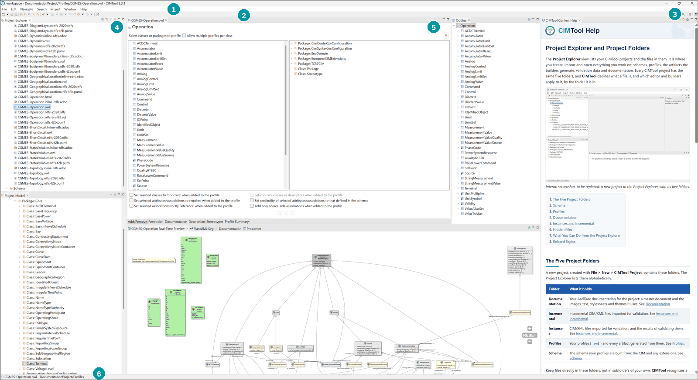
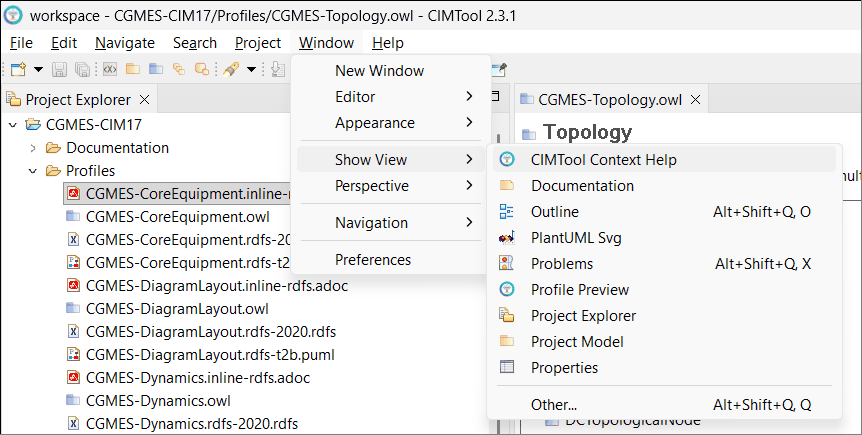
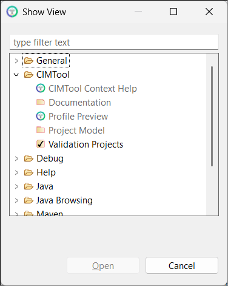
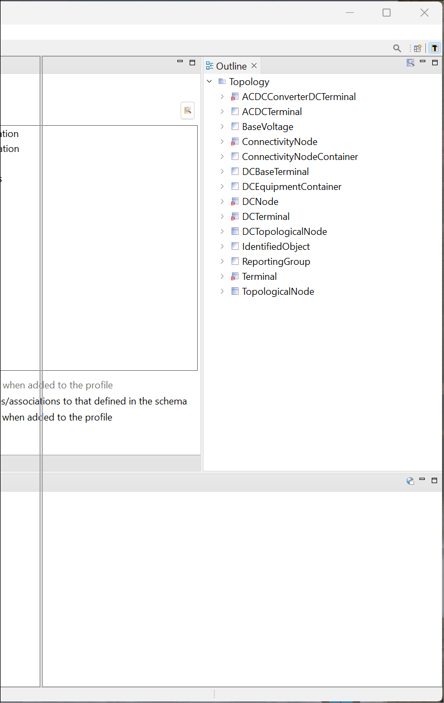

Workbench Basics
CIMTool is built on the Eclipse platform. Its main window, the workbench, is where you manage projects, browse the CIM, edit profiles and review generated artifacts. This topic explains the parts of the workbench you use in everyday CIMTool work. Eclipse features that CIMTool does not include, or that CIMTool work does not need, are listed at the end so you know what to ignore.

Interim screenshot, to be replaced: the CIMTool workbench with a profile open in the Profile Editor, the Project Explorer and Project Model on the left, the Outline and Help views on the right, and the Profile Real-Time Preview below the editor. The final screenshot will show the standard CIMTool perspective with callouts for the menu bar, toolbar, perspective bar, views and editor area.
The Workspace
When CIMTool starts it asks for a workspace: a folder on disk where CIMTool keeps your projects and its own settings for them.
- A single workspace can hold many CIMTool projects.
- To work in a different workspace, choose File > Switch Workspace. CIMTool restarts in the workspace you select.
- To share work with someone else, exchange projects rather than whole workspaces, because a workspace's internal settings are not portable between users or computers. See Exchanging CIMTool Projects.
Each CIMTool project contains five folders, listed in the Project Explorer as Documentation, Incremental, Instances, Profiles and Schema. See Project Explorer and Project Folders for what each holds.
The Workbench Window
The workbench window has these main areas:
| Area | What it is for |
|---|---|
| Menu bar | All commands, including the CIMTool wizards under File > New and File > Import. |
| Toolbar | Shortcuts for common commands, including CIMTool's import buttons. |
| Perspective bar (top right) | Switches between the open perspectives. |
| Views | Panels that show information, such as the Project Explorer or the Project Model. |
| Editor area | Where files open for editing, such as a profile in the Profile Editor. |
| Status line (bottom) | Messages and background progress. |
Views and editors are both called parts. Only one part is active at a time; it is the one whose tab is highlighted. Commands such as copy, paste and save apply to the active part, and several CIMTool views follow whatever is selected in it.
Perspectives
A perspective is a saved arrangement of views and editors for a particular kind of work. CIMTool opens in the CIMTool perspective and provides two others.
| Perspective | Use it for | Views it shows |
|---|---|---|
| CIMTool (default) | Creating projects, editing profiles and reviewing generated artifacts | Project Explorer and Project Model on the left; Outline on the right; Profile Real-Time Preview, PlantUML Svg, Documentation and Properties below the editor area |
| Browsing | Exploring the CIM without editing a profile | Project Explorer and Properties on the left; Project Model and Documentation on the right |
| Validation | Validating CIM/XML instance files against a profile | Validation Projects and Problems on the left; Project Model and Outline on the right; Progress below the editor area |
[Screenshot: the perspective bar, showing the three CIMTool perspectives.]
- Switch perspective: click its button on the perspective bar.
- Open a perspective that is not on the bar: choose Window > Perspective > Open Perspective. Browsing and Validation are listed there directly; any other perspective is under Other....
- Restore a perspective's original layout: choose Window > Perspective > Reset Perspective.... Use this whenever views have been closed or moved and you want the standard CIMTool layout back.
- Keep a customized layout: choose Window > Perspective > Save Perspective As....

Opening the Browsing or Validation perspective from the Window menu.
The Open Perspective list also includes perspectives such as Java and Debug. They come from Eclipse components that CIMTool includes, and they are not used for CIMTool work.
Views
These are the views you meet in CIMTool:
| View | What it shows |
|---|---|
| Project Explorer | Your projects and their files. Double-click a file to open it. See Project Explorer and Project Folders. |
| Project Model | The CIM (the project's merged schema) as a tree of packages, classes and members. It follows your selection in the Project Explorer and the Profile Editor. See Project Model: Browsing the CIM. |
| Outline | The structure of the active editor. In the Profile Editor, the Outline is where you select the profile element to work on. |
| Properties | Details of the selected item. |
| Documentation | The CIM documentation for the selected class or property. See Documentation View. |
| Profile Real-Time Preview | A live diagram of the profile in the active Profile Editor, redrawn each time you save, with any problems in the profile marked. See Profile Real-Time Preview. |
| PlantUML Svg | Diagrams for PlantUML (.puml) files. |
| Problems | Errors and warnings found by the CIMTool build, such as schema problems and profile inconsistencies. Double-click an entry to go to the resource concerned. |
| Progress | Background tasks, such as schema import and artifact generation. |
| Validation Projects | CIM/XML files imported for validation, and their results (Validation perspective). See How To Validate CPSM. |
[Screenshot: the CIMTool perspective with each view labelled. Until then, see the workbench screenshot at the top of this page.]
Opening a view: choose Window > Show View and pick the view. In the CIMTool perspective the menu lists the views used in CIMTool work directly. For any other view, choose Other... at the bottom of the menu, where the CIMTool views are grouped under CIMTool.

The Window > Show View menu in the CIMTool perspective.

The Show View dialog opened by Other..., with the CIMTool folder expanded. Views already open in the current perspective are greyed out; choosing one brings it to the front.
Arranging views:
- Drag a view by its tab to move it. An outline shows where it will dock before you release the mouse.
- Double-click a view's tab, or press Ctrl+M, to maximize it; do the same again to restore it. This is useful for the Profile Real-Time Preview diagram.
- Use the minimize button on a view stack to shrink it to a strip at the window edge; click the strip's icons to bring the views back.
- Drag a view outside the window to detach it into its own window, for example to put the Profile Real-Time Preview on a second monitor. Drag it back by its tab to re-attach it, as the note below explains.
Putting a detached view back: drag the tab, not the window
To re-attach a detached view, drag its tab, not the title bar of its window. Dragging the title bar only moves the window and never docks it. Hold the tab and drag it over the CIMTool window. Before you let go, Eclipse shows where the view will go: an outline over a group of tabs, or a thin double vertical line running the height of the window for a column of its own. The detached window closes when its last tab leaves it.
To put the help views back where they started, move them one at a time, because each tab is dragged on its own:
- Drag the first tab, for example CIMTool Context Help, and release when the thin double vertical line appears. This restores the full-height help column on the right-hand side.
- Drag the other tab, Help, onto the first one's tab row, and release when the outline appears over it. The two views then share the column again, as tabs side by side.

The thin double vertical line shown while dragging a help view back. Releasing here restores the full-height help column on the right-hand side.
Help Contents opens in a separate help window, not a view, so it can't be docked. If a view won't dock, Window > Perspective > Reset Perspective... puts every view back in its default layout.
Editors
Double-clicking a file in the Project Explorer opens it in the editor associated with its type:
| File | Opens in |
|---|---|
Profile (.owl in the Profiles folder) | Profile Editor, a multi-page editor whose pages are chosen with the tabs at its bottom edge. See The Profile Editor. |
Schema (.xmi, .eap, .eapx, .qea, .qeax, .merged-owl) | Model Browser |
Repair file (.repair) | Profile Repair Editor. See Profile Maintenance. |
Validation result (.diagnostic) | Diagnostic Browser |
Generated XML Schema (.xsd) and other XML | XSD and XML editors |
AsciiDoc (.adoc) | Asciidoctor editor |
To open a file in a different editor, right-click it and choose Open With.
Editors follow an open, edit, save cycle. An asterisk (*) on an editor's tab means it has unsaved changes. Save with File > Save (Ctrl+S). Saving a profile is what triggers artifact generation (see Builds below). To move between several open editors, press Ctrl+E and choose from the list.
Builds: How Artifacts Are Generated
CIMTool generates artifacts (XSD, JSON Schema, RDFS and the other builder outputs) through the workbench build. Each time you save a profile or import a schema, CIMTool rebuilds the affected outputs in the background.
- Keep Project > Build Automatically switched on (it is on by default). If it is off, saving a profile does not update its artifacts.
- To regenerate every artifact in a project from scratch, choose Project > Clean..., select the project and confirm.
- To generate artifacts without the workbench, for example in a CI/CD pipeline, use the command-line tool; see cimtool-cli: Generating Artifacts Outside the Workbench.
- After you upgrade CIMTool, the first time the new release opens a workspace it regenerates each project's profile artifacts once, in the background, so that existing projects pick up the new release's builder improvements without a manual rebuild. It runs only the builders enabled on each profile. A project opened, added or imported later is regenerated when it first appears. Because this is recorded in the workspace, a project shared through Git is regenerated once in each workspace that opens it.
- Problems found during a build appear in the Problems view and as markers on the files concerned. For example, if CIMTool cannot determine a project's base CIM schema, a problem marker on the schema files explains why and how to fix it, and profile outputs are not generated until it is resolved.
Which builders run for a profile is chosen on the Profile Editor's Profile Summary tab; see How the Builders Reflect the Target.
[Screenshot: the Problems view showing a CIMTool problem marker.]
Working with Files
- Import and export: CIMTool's own wizards are under File > Import > CIMTool and File > New. To move whole projects between workspaces or users, see Exchanging CIMTool Projects.
- Copy, rename, move, delete: right-click a file or folder in the Project Explorer.
- Files changed outside CIMTool: if you edit or add files with another program, right-click the project and choose Refresh so CIMTool sees the changes and rebuilds as needed.
- Recovering an earlier version of a file: the workbench keeps a local history of each file you save, which is a safety net for profiles.
- Right-click the file and choose Compare With > Local History to see what changed.
- Choose Replace With > Local History to go back to an earlier saved state.
- To recover a deleted file, right-click the folder that contained it and choose Restore from Local History....
- Local history is kept for a limited time and number of entries (set under Window > Preferences > General > Workspace > Local History); it does not replace version control.
Finding Things Quickly
| Shortcut | Does |
|---|---|
| Ctrl+Shift+R (Navigate > Open Resource...) | Opens any file in the workspace by typing part of its name. |
| Ctrl+3 | Finds any command, view or preference page by typing its name. |
| Ctrl+E | Switches between open editors. |
| Ctrl+M | Maximizes or restores the active view or editor. |
| Ctrl+Shift+L (Help > Key Assist...) | Lists all keyboard shortcuts. |
To search the CIM or a profile by name, use CIMTool's search instead; see Searching Schemas and Profiles.
Preferences
Choose Window > Preferences to change settings.
- CIMTool and its sub-page CIMTool > PlantUML Builder Preferences hold CIMTool's own settings.
- General > Workspace holds the build and refresh settings mentioned above.
- To copy your settings to another workspace or computer, use File > Export > General > Preferences, and import the file with File > Import > General > Preferences.
Getting Help
- Help > Help Contents opens this help.
- Help > Search searches all help topics.
- F1, or Help > Show Contextual Help, opens the Help view with help for the part you are working in. Context help is available for the Project Explorer, the Project Model, Documentation, Profile Real-Time Preview and Validation Projects views, and each tab of the Profile Editor. Where a part has no help of its own, the Help view links to this topic and to Getting Started.
- The Help view stays open beside your work and updates as you move between parts, so you can keep it docked while you edit a profile.
What CIMTool Does Not Include
General Eclipse documentation describes features that are not part of CIMTool. You can disregard instructions about:
- Installing or updating software (Install New Software, Check for Updates). CIMTool is updated by downloading and installing a new release.
- Team programming with CVS. Use your own version control tools on the project folder.
- Ant and external tools.
- The Welcome page and cheat sheets.